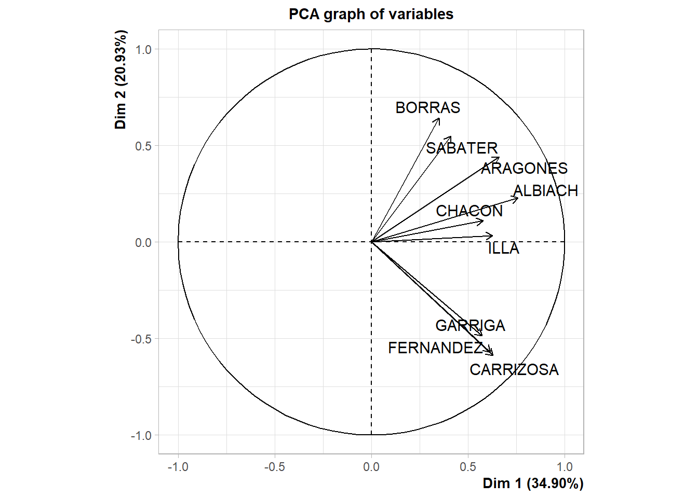
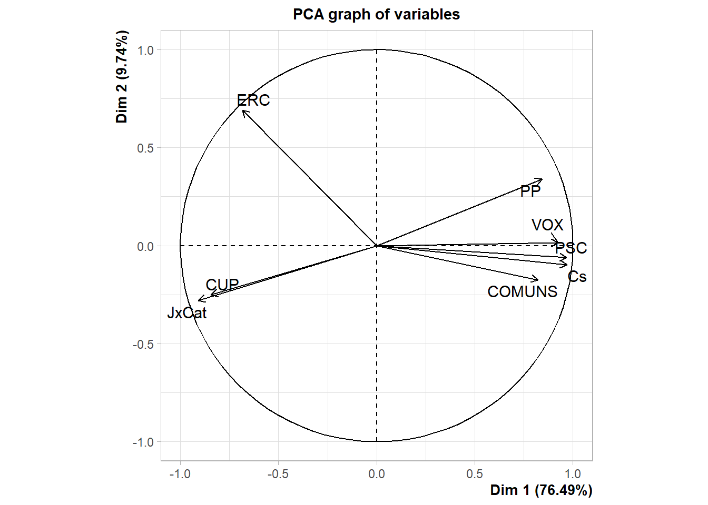
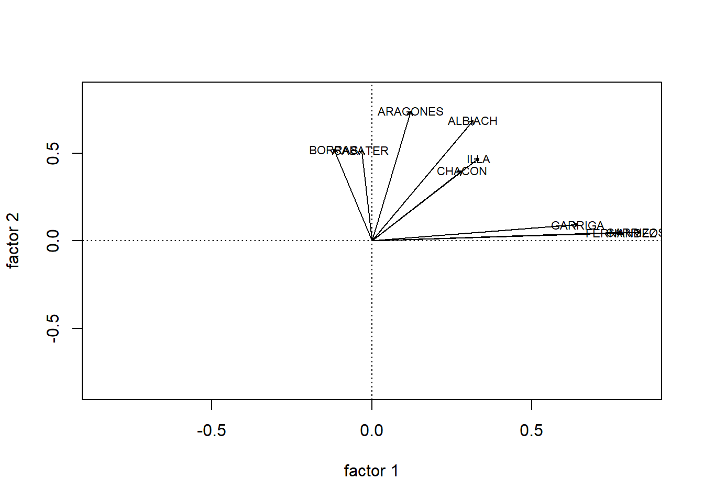
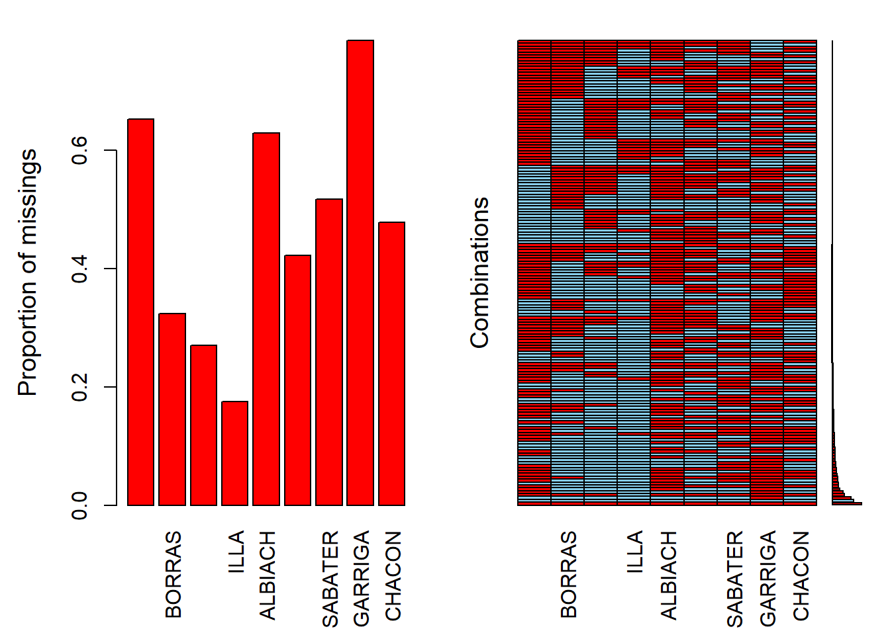
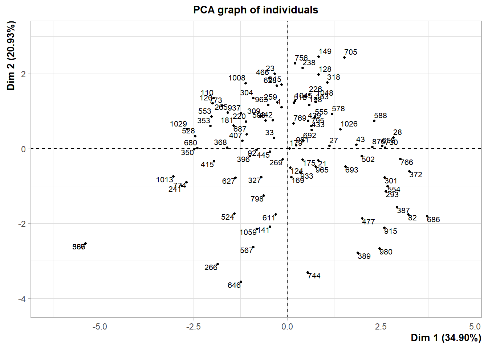
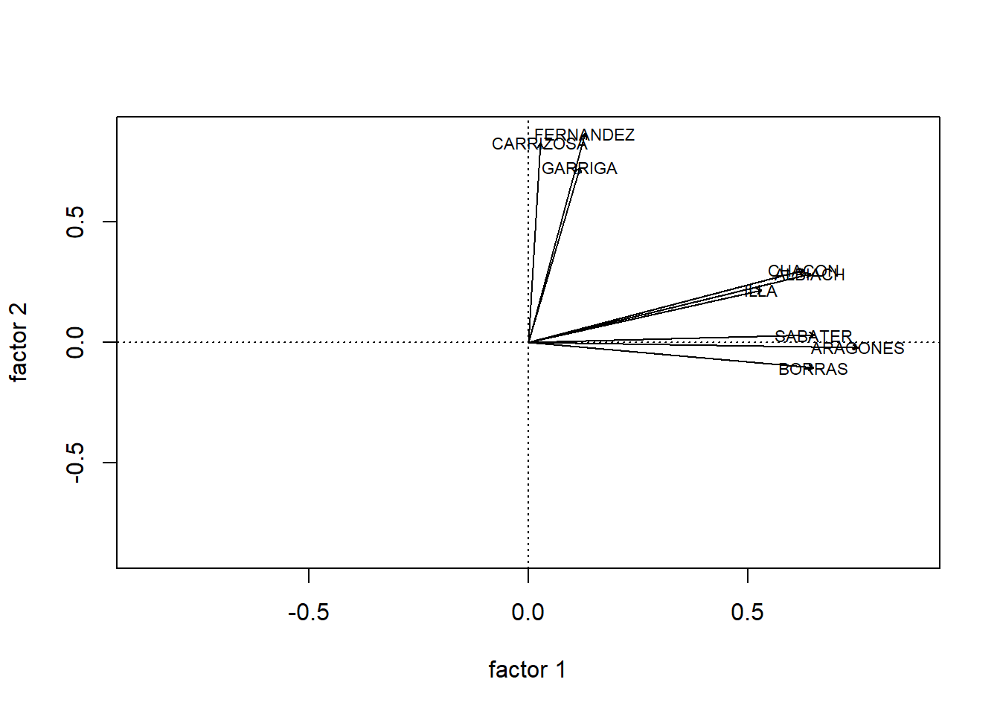

Capítol 4 Teoria Setmana 4 (2021-02-3)
4.1 Packages
install.packages(texreg)
install.packages(lmtest)
install.packages(sandwich)4.2 Salaries
El conjunt de dades Salary informa d’una mostra de salaris de professors universitaris recopilats durant l’any acadèmic 2008-2009 a USA. Addicionalment als salaris en dòlars, les dades inclouen les següents 5 variables: gènere, anys des del Doctorat, anys de servei, disciplina (teoria (1) o aplicat (2)) i rang acadèmic.
Hi ha una consulta sobre la possible discriminació salarial per gènere.
library(car)
names(Salaries)## [1] "rank" "discipline" "yrs.since.phd" "yrs.service"
## [5] "sex" "salary"dim(Salaries)## [1] 397 64.2.1 Anàlisis univariant
suppressPackageStartupMessages(library(tidyverse))
Salaries %>%
ggplot(aes(x=salary)) +
geom_density()+
labs(title="Densitat Salaris")
Salaries %>%
ggplot(aes(x=log(salary))) +
geom_density()+
labs(title="Densitat Log-Salaris")
Salaries %>%
ggplot(aes(x=sex)) +
geom_bar()
Salaries %>%
ggplot(aes(x=rank)) +
geom_bar()
Salaries %>%
ggplot(aes(x=discipline)) +
geom_bar()
Salaries %>%
ggplot(aes(x=yrs.since.phd)) +
geom_density()
Salaries %>%
ggplot(aes(x=log(yrs.since.phd))) +
geom_density()
Salaries %>%
ggplot(aes(x=yrs.service)) +
geom_density()
Salaries %>%
ggplot(aes(x=log(yrs.service))) +
geom_density()## Warning: Removed 11 rows containing non-finite values (stat_density).
4.2.2 Anàlisis bivariant
Salaries <- Salaries %>%
mutate(log_salary = log(salary)
,log_yrs.since.phd = log(yrs.since.phd)
,yrs.since.phd2 = yrs.since.phd**2
,log_yrs.service = log(yrs.service+1)
,yrs.service2 = yrs.service**2
)
Salaries %>% select(salary,log_salary,yrs.since.phd,log_yrs.since.phd,yrs.since.phd2) %>% plot()
Salaries %>% select(salary,log_salary,yrs.since.phd,log_yrs.since.phd,yrs.since.phd2) %>% cor() %>% round(3)## salary log_salary yrs.since.phd log_yrs.since.phd
## salary 1.000 0.988 0.419 0.496
## log_salary 0.988 1.000 0.426 0.520
## yrs.since.phd 0.419 0.426 1.000 0.915
## log_yrs.since.phd 0.496 0.520 0.915 1.000
## yrs.since.phd2 0.305 0.297 0.963 0.790
## yrs.since.phd2
## salary 0.305
## log_salary 0.297
## yrs.since.phd 0.963
## log_yrs.since.phd 0.790
## yrs.since.phd2 1.000Salaries %>%
ggplot(aes(x=sex,y=salary)) +
geom_boxplot()
Salaries %>%
ggplot(aes(x=sex,y=log(salary))) +
geom_boxplot()
reg1 <- lm(salary~sex, data=Salaries)
summary(reg1)##
## Call:
## lm(formula = salary ~ sex, data = Salaries)
##
## Residuals:
## Min 1Q Median 3Q Max
## -57290 -23502 -6828 19710 116455
##
## Coefficients:
## Estimate Std. Error t value Pr(>|t|)
## (Intercept) 101002 4809 21.001 < 2e-16 ***
## sexMale 14088 5065 2.782 0.00567 **
## ---
## Signif. codes: 0 '***' 0.001 '**' 0.01 '*' 0.05 '.' 0.1 ' ' 1
##
## Residual standard error: 30030 on 395 degrees of freedom
## Multiple R-squared: 0.01921, Adjusted R-squared: 0.01673
## F-statistic: 7.738 on 1 and 395 DF, p-value: 0.005667Observem que els salaris en homes són $14.088 superiors que en les dones. Això ens diu que, quan comparem els salaris de forma directe, entre homes i dones, amb un nivell de confiança del 95%, hi ha diferències significatives.
library(stargazer)
logreg1 <- lm(log(salary)~sex, data=Salaries)
stargazer(reg1,logreg1, type="text")##
## ===========================================================
## Dependent variable:
## ----------------------------
## salary log(salary)
## (1) (2)
## -----------------------------------------------------------
## sexMale 14,088.010*** 0.129***
## (5,064.579) (0.043)
##
## Constant 101,002.400*** 11.491***
## (4,809.386) (0.041)
##
## -----------------------------------------------------------
## Observations 397 397
## R2 0.019 0.022
## Adjusted R2 0.017 0.019
## Residual Std. Error (df = 395) 30,034.610 0.258
## F Statistic (df = 1; 395) 7.738*** 8.810***
## ===========================================================
## Note: *p<0.1; **p<0.05; ***p<0.01La comparativa en termes de logaritme neperià del salari, mostra igualment diferencies significatives amb un 95% de confiança. El coeficient 0,129 del gènere, ens diu que els homes, tenen un salari un 12,9% (aproximadament) per sobre de les dones.
Incorporem ara nous factor.
logreg2 <- lm(log(salary) ~ sex + yrs.since.phd, data= Salaries)
stargazer(logreg1, logreg2, type="text")##
## ==================================================================
## Dependent variable:
## ----------------------------------------------
## log(salary)
## (1) (2)
## ------------------------------------------------------------------
## sexMale 0.129*** 0.075*
## (0.043) (0.040)
##
## yrs.since.phd 0.008***
## (0.001)
##
## Constant 11.491*** 11.353***
## (0.041) (0.041)
##
## ------------------------------------------------------------------
## Observations 397 397
## R2 0.022 0.188
## Adjusted R2 0.019 0.184
## Residual Std. Error 0.258 (df = 395) 0.235 (df = 394)
## F Statistic 8.810*** (df = 1; 395) 45.715*** (df = 2; 394)
## ==================================================================
## Note: *p<0.1; **p<0.05; ***p<0.01Observem que la variable “anys des del doctorat” guanya molt pes en la regressió, i produeix que la variables gènere informi que els homes guanyen un 7,5% més les dones (a igual nombre de anys des del doctorat), essent ara, aquesta relació, no significativa amb un nivell del confiança del 95%.
En aquest cas, el coeficient 0.008 ens diu que per cada any addicional, hi ha un augment del 0,8% del salari.
Salaries %>%
ggplot(aes(x=yrs.since.phd, y=log(salary), color=sex))+
geom_point()
4.2.3 Realció log-log
loglogreg2 <- lm(log(salary) ~ sex + log(yrs.since.phd), data= Salaries)
stargazer(logreg1, logreg2, loglogreg2, type="text")##
## ==========================================================================================
## Dependent variable:
## ----------------------------------------------------------------------
## log(salary)
## (1) (2) (3)
## ------------------------------------------------------------------------------------------
## sexMale 0.129*** 0.075* 0.076**
## (0.043) (0.040) (0.038)
##
## yrs.since.phd 0.008***
## (0.001)
##
## log(yrs.since.phd) 0.167***
## (0.014)
##
## Constant 11.491*** 11.353*** 11.061***
## (0.041) (0.041) (0.051)
##
## ------------------------------------------------------------------------------------------
## Observations 397 397 397
## R2 0.022 0.188 0.278
## Adjusted R2 0.019 0.184 0.274
## Residual Std. Error 0.258 (df = 395) 0.235 (df = 394) 0.222 (df = 394)
## F Statistic 8.810*** (df = 1; 395) 45.715*** (df = 2; 394) 75.904*** (df = 2; 394)
## ==========================================================================================
## Note: *p<0.1; **p<0.05; ***p<0.01Si agafem els anys d’experiència en termes de logaritme observem 3 coses:
- El coeficient 0,167 indica que per cada augment del 100% (duplicar) els anys des del doctorat, el salari augmenta un 16,7%.
- Per altra banda la variable gènere, passa a ser significativa amb un 95% de confiança.
- La regressió passa a explicar del 18,8% a un 27,8% de la variabilitat del logaritme dels salaris.
Salaries %>%
ggplot(aes(x=log(yrs.since.phd), y=log(salary), color=sex))+
geom_point()
4.2.4 Realció x**2
logreg22 <- lm(log(salary) ~ sex + yrs.since.phd +yrs.since.phd2, data= Salaries)
stargazer(logreg1, logreg2, loglogreg2, logreg22, type="text")##
## ==================================================================================================================
## Dependent variable:
## ----------------------------------------------------------------------------------------------
## log(salary)
## (1) (2) (3) (4)
## ------------------------------------------------------------------------------------------------------------------
## sexMale 0.129*** 0.075* 0.076** 0.087**
## (0.043) (0.040) (0.038) (0.035)
##
## yrs.since.phd 0.008*** 0.039***
## (0.001) (0.003)
##
## log(yrs.since.phd) 0.167***
## (0.014)
##
## yrs.since.phd2 -0.001***
## (0.0001)
##
## Constant 11.491*** 11.353*** 11.061*** 11.081***
## (0.041) (0.041) (0.051) (0.044)
##
## ------------------------------------------------------------------------------------------------------------------
## Observations 397 397 397 397
## R2 0.022 0.188 0.278 0.366
## Adjusted R2 0.019 0.184 0.274 0.361
## Residual Std. Error 0.258 (df = 395) 0.235 (df = 394) 0.222 (df = 394) 0.208 (df = 393)
## F Statistic 8.810*** (df = 1; 395) 45.715*** (df = 2; 394) 75.904*** (df = 2; 394) 75.720*** (df = 3; 393)
## ==================================================================================================================
## Note: *p<0.1; **p<0.05; ***p<0.01Ara no hi ha una interpretació directa. Veiem que és una realció significativa al 95% de confiança en tots els factors.
Salaries %>%
ggplot(aes(x=yrs.since.phd, y=log(salary), color=sex))+
stat_smooth(method = "lm", formula = y ~ x + I(x^2), size = 1)+
geom_point()
4.2.5 Interaccions
Anem a analitzar la interacció entre gènere i anys des del doctorat.
logreg3 <- lm(log(salary) ~ sex * yrs.since.phd , data= Salaries)
stargazer(logreg1, logreg2, logreg3, type="text")##
## ============================================================================================
## Dependent variable:
## ----------------------------------------------------------------------
## log(salary)
## (1) (2) (3)
## --------------------------------------------------------------------------------------------
## sexMale 0.129*** 0.075* 0.210***
## (0.043) (0.040) (0.078)
##
## yrs.since.phd 0.008*** 0.016***
## (0.001) (0.004)
##
## sexMale:yrs.since.phd -0.008**
## (0.004)
##
## Constant 11.491*** 11.353*** 11.229***
## (0.041) (0.041) (0.074)
##
## --------------------------------------------------------------------------------------------
## Observations 397 397 397
## R2 0.022 0.188 0.197
## Adjusted R2 0.019 0.184 0.190
## Residual Std. Error 0.258 (df = 395) 0.235 (df = 394) 0.234 (df = 393)
## F Statistic 8.810*** (df = 1; 395) 45.715*** (df = 2; 394) 32.040*** (df = 3; 393)
## ============================================================================================
## Note: *p<0.1; **p<0.05; ***p<0.01logreg4 <- lm(log(salary) ~ sex * yrs.since.phd + rank + discipline , data= Salaries)
summary(logreg4)##
## Call:
## lm(formula = log(salary) ~ sex * yrs.since.phd + rank + discipline,
## data = Salaries)
##
## Residuals:
## Min 1Q Median 3Q Max
## -0.68720 -0.11114 -0.00746 0.09789 0.57698
##
## Coefficients:
## Estimate Std. Error t value Pr(>|t|)
## (Intercept) 11.1613950 0.0593982 187.908 < 2e-16 ***
## sexMale 0.0627753 0.0617296 1.017 0.310
## yrs.since.phd 0.0006863 0.0032390 0.212 0.832
## rankAssocProf 0.1536658 0.0337357 4.555 7.02e-06 ***
## rankProf 0.4550346 0.0344904 13.193 < 2e-16 ***
## disciplineB 0.1279222 0.0188376 6.791 4.17e-11 ***
## sexMale:yrs.since.phd -0.0012207 0.0031494 -0.388 0.699
## ---
## Signif. codes: 0 '***' 0.001 '**' 0.01 '*' 0.05 '.' 0.1 ' ' 1
##
## Residual standard error: 0.1819 on 390 degrees of freedom
## Multiple R-squared: 0.5185, Adjusted R-squared: 0.5111
## F-statistic: 70 on 6 and 390 DF, p-value: < 2.2e-16logreg5 <- lm(log(salary) ~ sex + yrs.since.phd + yrs.since.phd2 + rank + discipline , data= Salaries)
summary(logreg5)##
## Call:
## lm(formula = log(salary) ~ sex + yrs.since.phd + yrs.since.phd2 +
## rank + discipline, data = Salaries)
##
## Residuals:
## Min 1Q Median 3Q Max
## -0.62180 -0.10560 -0.00586 0.10151 0.59825
##
## Coefficients:
## Estimate Std. Error t value Pr(>|t|)
## (Intercept) 1.111e+01 4.262e-02 260.719 < 2e-16 ***
## sexMale 5.020e-02 3.088e-02 1.626 0.10481
## yrs.since.phd 1.277e-02 4.522e-03 2.824 0.00498 **
## yrs.since.phd2 -2.290e-04 7.604e-05 -3.012 0.00277 **
## rankAssocProf 8.627e-02 4.025e-02 2.143 0.03270 *
## rankProf 3.481e-01 4.945e-02 7.038 8.81e-12 ***
## disciplineB 1.304e-01 1.864e-02 6.997 1.15e-11 ***
## ---
## Signif. codes: 0 '***' 0.001 '**' 0.01 '*' 0.05 '.' 0.1 ' ' 1
##
## Residual standard error: 0.1799 on 390 degrees of freedom
## Multiple R-squared: 0.5293, Adjusted R-squared: 0.522
## F-statistic: 73.09 on 6 and 390 DF, p-value: < 2.2e-16avPlots(logreg5)
vif(logreg5)## GVIF Df GVIF^(1/(2*Df))
## sex 1.036197 1 1.017938
## yrs.since.phd 41.568673 1 6.447377
## yrs.since.phd2 29.791275 1 5.458138
## rank 4.291107 2 1.439270
## discipline 1.057661 1 1.028426plot(logreg5,1)
4.2.6 Estimadors robustos
- HC0 = es el original de White (Wooldridge 2016)
- HC1 = Es el que usa el software de Stata
- HC3 =Es el más conservador, por lo tanto, es muy recomendable
library(texreg)## Version: 1.37.5
## Date: 2020-06-17
## Author: Philip Leifeld (University of Essex)
##
## Consider submitting praise using the praise or praise_interactive functions.
## Please cite the JSS article in your publications -- see citation("texreg").##
## Attaching package: 'texreg'## The following object is masked from 'package:tidyr':
##
## extractlibrary(lmtest)## Loading required package: zoo##
## Attaching package: 'zoo'## The following objects are masked from 'package:base':
##
## as.Date, as.Date.numericlibrary(sandwich)
logreg5_robust_3 <- coeftest(logreg5, vcov = vcovHC(logreg5, "HC3"))
logreg5_robust_1 <- coeftest(logreg5, vcov = vcovHC(logreg5, "HC1"))
logreg5_robust_0 <- coeftest(logreg5, vcov = vcovHC(logreg5, "HC0"))
models_robust <- list(logreg5, logreg5_robust_0,
logreg5_robust_1, logreg5_robust_3)
screenreg(models_robust,
custom.model.names = c("sin ES robustos",
"robustos HC0", "robustos HC1", "robustos HC3"))##
## =========================================================================
## sin ES robustos robustos HC0 robustos HC1 robustos HC3
## -------------------------------------------------------------------------
## (Intercept) 11.11 *** 11.11 *** 11.11 *** 11.11 ***
## (0.04) (0.04) (0.04) (0.04)
## sexMale 0.05 0.05 * 0.05 * 0.05 *
## (0.03) (0.02) (0.02) (0.02)
## yrs.since.phd 0.01 ** 0.01 * 0.01 * 0.01 *
## (0.00) (0.01) (0.01) (0.01)
## yrs.since.phd2 -0.00 ** -0.00 * -0.00 * -0.00 *
## (0.00) (0.00) (0.00) (0.00)
## rankAssocProf 0.09 * 0.09 ** 0.09 ** 0.09 **
## (0.04) (0.03) (0.03) (0.03)
## rankProf 0.35 *** 0.35 *** 0.35 *** 0.35 ***
## (0.05) (0.04) (0.04) (0.04)
## disciplineB 0.13 *** 0.13 *** 0.13 *** 0.13 ***
## (0.02) (0.02) (0.02) (0.02)
## -------------------------------------------------------------------------
## R^2 0.53
## Adj. R^2 0.52
## Num. obs. 397
## =========================================================================
## *** p < 0.001; ** p < 0.01; * p < 0.05## Normalidad
plot(logreg5,2)
Outlyers
plot(logreg5,5)